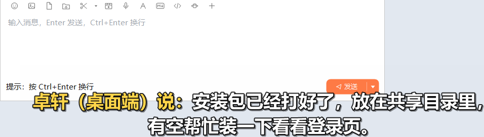
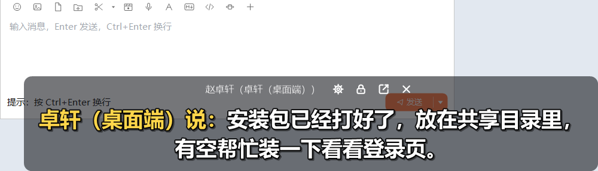
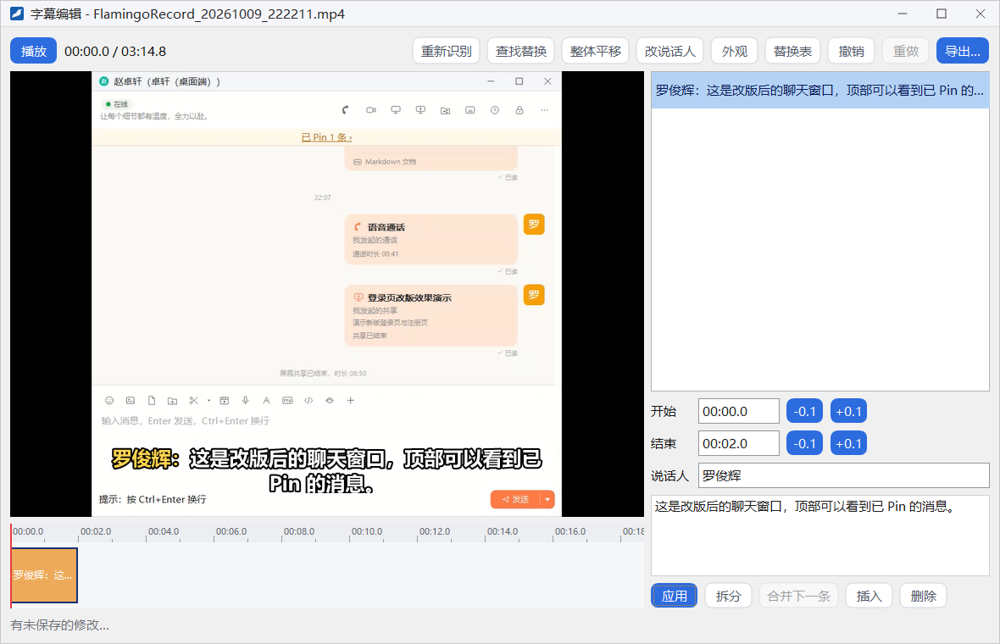
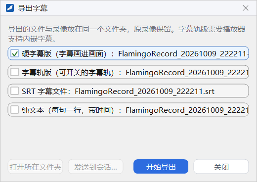

字幕模式与字幕编辑
客户端有两类字幕功能：「字幕模式」把某个会话收到的消息以大号字幕显示在屏幕下方；「语音字幕」把录屏和屏幕共享中的讲话识别成文字，录完后可以在字幕编辑器里修改，再导出成带字幕的视频或字幕文件。
- 适用：全体员工
- 字幕模式：不需要企业开启任何开关
- 语音字幕：需要企业开启「语音字幕」开关；识别在你自己的电脑上完成，声音不会上传
字幕模式
开启字幕模式后，这个会话里别人发来的新消息会以大号字幕显示在屏幕下方，格式为「某某说：……」。你在做别的事情时不必切回聊天窗，也能看到消息内容。还没有新消息时，字幕显示「等待新消息…」。
开启方式有两种：
- 点单聊窗或群聊窗头部的字幕按钮。鼠标停在按钮上提示「字幕已关闭」，开启后提示「字幕已开启」，再点一次即关闭。
- 在主面板右键会话、联系人或群，选 开启字幕模式；开启后同一位置变为 关闭字幕模式。从右键菜单开启时只弹出字幕，不会打开聊天窗。

字幕上的工具按钮
把鼠标移到字幕上，字幕背后会出现一块半透明的底板，上方显示会话名称和四个工具按钮：

1 2 3 4- 设置：弹出设置菜单，见下文
- 锁定字幕 / 解锁字幕：锁定后字幕不再响应鼠标
- 回到聊天窗：打开这个会话的聊天窗
- 退出字幕模式：关闭字幕
- 移动与调宽：没有锁定时，按住字幕的文字或空白处可以拖动位置，按住左右边缘可以调整宽度。
- 锁定：锁定后鼠标点击会穿过字幕，落到下面的窗口上，不会误碰字幕。鼠标移到字幕上时会浮出一个小锁按钮，点它即可解锁。
- 设置菜单：字号（小、中、大、特大）、最多显示行数，以及 共享屏幕或录屏时隐藏字幕。勾选最后一项后，字幕不会出现在你共享的画面和录像里；系统不支持时这一项显示为灰色。
语音字幕
企业开启「语音字幕」开关后，录屏和屏幕共享时可以把讲话实时识别成字幕。第一次使用时客户端要先加载语音识别组件，可能需要稍等片刻。
- 录屏：在「选择要录制的内容」窗口勾选 生成字幕。录制时屏幕上会实时显示识别出的字幕，这层字幕本身不会录进视频；录制条上的字幕按钮可以随时开关，关闭期间的讲话不会生成字幕。录完后字幕草稿与录像保存在同一个文件夹里，详见「屏幕录制」。
- 屏幕共享：在「选择要共享的内容」窗口勾选 为我的发言生成字幕，或在共享中点控制条上的字幕按钮，观看者就能看到你讲话的字幕。共享者在「更多」菜单、观看者在标题栏的字幕图标里可以设置 为我的发言生成字幕 和 显示字幕，详见「屏幕共享」。
字幕编辑器
在录制完成提示上点 编辑字幕，或在「录制管理」里选中一段录像点 编辑字幕，即可打开字幕编辑器。窗口标题显示录像的文件名。

窗口布局
- 视频预览（左上）：单击画面播放或暂停，也可以点工具栏左端的 播放；旁边显示当前时间和总时长。
- 时间轴（左下）：每条字幕显示为一个色块，色块的位置和长度对应它的开始和结束时间。
- 字幕列表（右上）：列出全部字幕，选中一条后在下方编辑。
- 编辑区（右下）：修改选中的那条字幕，见下文。
- 状态栏（底部）：修改后约 2 秒自动保存，状态栏依次显示「有未保存的修改…」和「已保存。」，不需要手动保存。
编辑一条字幕
- 在字幕列表里选中一条字幕。
- 修改 开始 和 结束 时间，格式为「分:秒.十分之一秒」，如
01:23.4；右侧的 -0.1、+0.1 按钮每次微调 0.1 秒。结束时间至少要比开始时间晚 0.2 秒。 - 按需修改 说话人 和下方的字幕文字。
- 点 应用 保存这一条的修改。
编辑区下方的其他按钮：
- 拆分：先把光标放在文字中要拆开的位置再点，一条字幕拆成两条，每半段都不能短于 0.2 秒。
- 合并下一条：把这一条与后一条合并。
- 插入：在当前播放位置插入一条新字幕，文字为「（新字幕）」；离下一条字幕太近时插不进去。
- 删除：删除这一条字幕。
工具栏
| 按钮 | 作用 |
|---|---|
| 识别字幕 / 重新识别 | 对整段录像做一次语音识别。还没有字幕时按钮叫「识别字幕」；已有字幕时叫「重新识别」，会替换现有的全部字幕（可以撤销）。识别过程中按钮变为「取消识别」 |
| 查找替换 | 在全部字幕里查找文字，可以逐处查找，也可以全部替换 |
| 整体平移 | 把全部字幕整体前后移动，正数往后移，负数往前移，如 -1.5 表示全部提前 1.5 秒 |
| 改说话人 | 把某个说话人的名字统一改成另一个 |
| 外观 | 设置字号、离底边的距离、描边宽度、底框不透明度，以及是否显示说话人 |
| 替换表 | 维护一张「原文 → 替换为」的表，之后识别出的每一句先按这张表纠正常见的误识别 |
| 撤销 / 重做 | 撤销或恢复编辑操作 |
| 导出… | 打开「导出字幕」窗口，见下文 |
导出字幕

导出的文件与录像放在同一个文件夹里，原录像保留不变。可以同时勾选多种：
- 硬字幕版（字幕画进画面）：生成一个新视频，字幕直接画在画面上，任何播放器都能看到。
- 字幕轨版（可开关的字幕轨）：生成一个带字幕轨的新视频，观看时可以开关字幕，需要播放器支持内嵌字幕。
- SRT 字幕文件：通用的字幕文件格式。
- 纯文本（每句一行，带时间）：便于整理成文字稿。
点 开始导出 后窗口显示进度，此时 关闭 变为 取消。同名文件已存在时会先询问是否覆盖。导出完成后，可以点 打开所在文件夹 查看，或点 发送到会话… 把导出的文件发给同事。只录声音的录音没有画面，只能导出 SRT 字幕文件和纯文本。